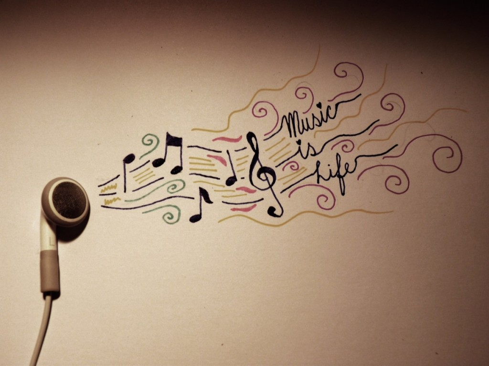

La Musica Es Vida
La música es algo sin lo que prácticamente no puede vivir nadie. No importa que algunas personas sientan preferencia por un género en particular, un cantante o una banda; esta siempre será algo que se haga presente en cada parte del mundo, para acompañar momentos que son de lo más variados. Y se ha vuelto tan cotidiana que probablemente, nunca te hayas preguntado lo que se oculta detrás de ella más allá del sonido. Por eso hoy te mostramos siete cosas acerca de la música que seguramente no sabías y de las cuales, cuando te enteres, te van a sorprender como nunca.